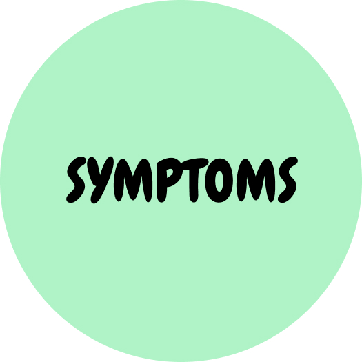
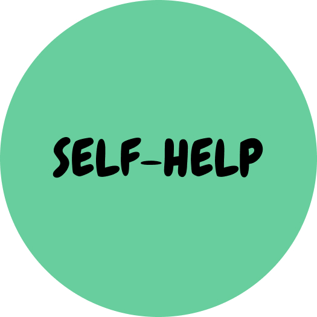
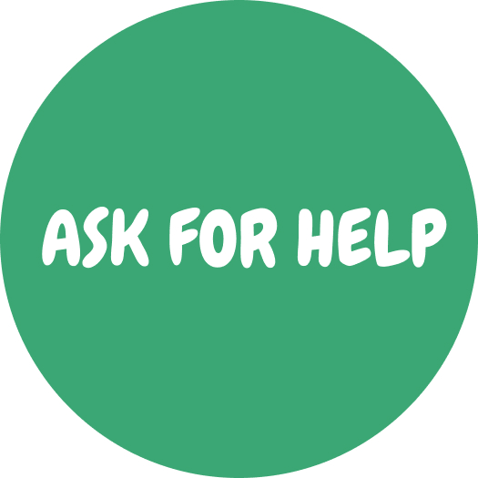

DEPRESSION
SLEEP DISORDER
STRESS DISORDER
EATING DISORDER
ANXIETY DISORDER
FUN TIME
SLEEP DISORDERS
Click on the circles to learn more about sleep disorders
Sleep Disorders:
Sleep disorders are conditions that result in changes in the way that you sleep.
A sleep disorder can affect your overall health, safety and quality of life. Sleep deprivation can affect your ability to drive safely and increase your risk of other health problems.
Some of the signs and symptoms of sleep disorders include excessive daytime sleepiness, irregular breathing or increased movement during sleep. Other signs and symptoms include an irregular sleep and wake cycle and difficulty falling asleep.
Common myths about sleep disorders:
Myth 1: Sleep Disorders Aren’t Related to Health Conditions.
Despite some beliefs that health problems like diabetes, high blood pressure, depression and obesity are not related to the quality of sleep, our sleep studies and research show that this is false. An abundance of scientific studies has also shown correlations between insufficient or poor-quality sleep and a variety of diseases, including those listed above. Lack of sleep can also contribute to health conditions such as obesity and diabetes.
Myth 2: The Older You Are, the Less Sleep You Need.
You’ve probably heard someone say they are completely “fine” running on 5 hours of sleep. But even though they may feel okay, they probably aren’t noticing the subtle strains a lack of sleep is putting on their life, whether it’s an absence of motivation or irritability. Sleep experts agree that most adults need between 7 and 9 hours of sleep each night for best health and performance. Do keep in mind that it is healthy for sleep patterns to change as you age. When you may have once gotten your 8 hours sleeping 11 p.m. to 7 a.m., you may now sleep 9 p.m. to 5:30 a.m. and feel no difference.
Myth 3: You Can Make Up for Fewer Hours of Sleep at Night with Naps.
While many people enjoy a power nap in the afternoon to recharge, studies show anything more than that during the day can affect your sleep patterns by putting you into the deeper stages of REM sleep. Don’t bank on trying to “make up” for lost sleep time with naps, as these can disrupt your normal sleep patterns and leave you more tired than you were to begin with. Instead, just plan on getting to sleep earlier the next night.
Myth 4: Stay in Bed When You Can’t Sleep.
Getting out of bed when a bout of restlessness kicks in may sound counterintuitive, but many sleep experts attest to the fact that forcing sleep when you don’t feel tired may cause stress and keep you awake even longer. Instead, doing something relaxing like reading a book or listening to calm music may help induce sleep. Avoid looking at the clock, turning on bright lights, watching TV or checking your phone, as the light may impede melatonin production.
Myth 5: Snoring Doesn’t Cause Health Problems.
Snoring can be indicative of a number of sleep disorders and health conditions, such as sleep apnea or heart disease. Gasping for breath or gaps in breathing are other alarming signs of sleep disorders and that it’s time to reach out to a sleep specialist to discuss treatment options. If you or a loved one experiences prolonged snoring or breathing issues while sleeping, speak with your doctor about it.
Be sure to consult your physician if you are experiencing sleep issues. There are many options when it comes to alleviating sleep disorders.
Symptoms of sleep disorders:
A sleep disorder can affect your overall health, safety and quality of life. Sleep deprivation can affect your ability to drive safely and increase your risk of other health problems. Some common types of sleep disorders include:
- Insomnia, in which you have difficulty falling asleep or staying asleep throughout the night.
- Sleep apnea, in which you experience abnormal patterns in breathing while you are asleep. There are several types of sleep apnea.
- Restless legs syndrome (RLS), a type of sleep movement disorder. Restless legs syndrome, also called Willis-Ekbom disease, causes an uncomfortable sensation and an urge to move the legs while you try to fall asleep.
- Narcolepsy, a condition characterized by extreme sleepiness during the day and falling asleep suddenly during the day.
Symptoms of sleep disorders include being very sleepy during the daytime and having trouble falling asleep at night. Some people may fall asleep at inappropriate times, such as while driving. Other symptoms include breathing in an unusual pattern or feeling an uncomfortable urge to move while you are trying to fall asleep.
Unusual or bothersome movements or experiences during sleep are also possible. Having an irregular sleep and wake cycle is another symptom of sleep disorders.
Sleeping disorder among college students:
Students experience several important developments when starting at university. They have to cope with “leaving home, increased independence, changes in peer groups, new social situations, maintenance of academic responsibilities and increased access to alcohol or drugs”.
As the challenges arrive, many of them have developed sleep disorders:
- Up to 60% of all college students suffer from a poor sleep quality, and 7.7% meet all criteria of an insomnia disorder.
- About 90% of university students have roommates, and among them, 41% wake up at night due to the noise of others.
- About 60% suffer from a poor sleep quality according to the PSQI.
- 27% of all university students are at a risk of at least one sleep disorder.
- Previous findings reported that a minimum 7.7% of students suffer from insomnia and 24.3% from nightmares.
- According to one research, 31% of all students suffered from morning tiredness.
Sleep problems and sleep disorders severely impair university students’ academic success. In a study conducted by Buboltz et al, 31% of all students suffered from morning tiredness.
In another study, poor sleepers reported reduced daytime functioning. Shorter sleep duration and an irregular sleep–wake schedule significantly correlated with a lower GPA. Regarding sleep habits, the wake-up times explained significant amounts of GPA variance.
A clinical review provided evidence that sleep problems correlated with impeded learning, especially poorer declarative and procedural learning, neurocognitive performance and academic success.
So, you are not alone!
Developing a sleep/wake routine to help improving your sleep
In the morning
Create a ‘start the day well’ routine that includes getting up at the same time every day. This tells your body that it’s time to wake up.
It could include:
- a meditation or some gentle stretching
- showering and brushing your teeth
- getting dressed
- eating breakfast
- making a plan for the day
You could also include things like walking the dog, listening to music that makes you feel more awake, or daily tasks like taking medications. Going outside can be particularly helpful as exposure to light tells the brain that it's time to wake up.
If you have trouble getting up in the morning, set your alarm. Decide how long you will lie in bed after your alarm goes off and stick to it. It can help to put your alarm on the other side of the room, so you have to get up to switch it off.
In the afternoon
A good afternoon routine will help set you up for a relaxing evening and a good night’s sleep.
Your routine could include:
- eating lunch (follow your health professional’s advice if necessary for medications, weight management etc.)
- some sort of exercise in the afternoon or early evening, like a walk, yoga session, or class at the gym
In the evening
Create an ‘end the day well’ routine that helps your body and mind relax and prepare for sleep.
Your routine could include:
- eating dinner (follow your health professional’s advice if necessary)
- taking a bath or shower and brushing your teeth
- changing into your sleepwear
- taking any medications you need to take at night
- a regular bedtime - but remember, don't go to bed if you don't feel sleepy
- noting down anything you have to remember for the next day
- listening to the radio or a podcast
- reading a book
- meditation
- doing a relaxation exercise
- doing some gentle stretching
PLEASE ask for help immediately, if:
You are:
- Having suicidal thoughts;
- Might harm yourself or others;
- Feeling physically uncomfortable.
Carnegie Mellon on campus resources:
- Call Counseling and Psychological Services (CaPS) at 412-268-2922;
- Reach out to your advisor;
- Schedule a meeting with University Health Services (UHS) for stress consultations, substance use & recovery services, and health advice at 421-268-2157.
Click here to find the nearest mental health facility to you!
We are here! Let us help.



 DEPRESSION
SLEEP DISORDER
STRESS DISORDER
EATING DISORDER
ANXIETY DISORDER
FUN TIME
DEPRESSION
SLEEP DISORDER
STRESS DISORDER
EATING DISORDER
ANXIETY DISORDER
FUN TIME